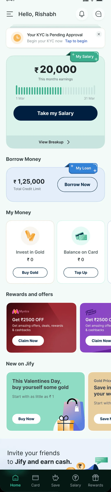
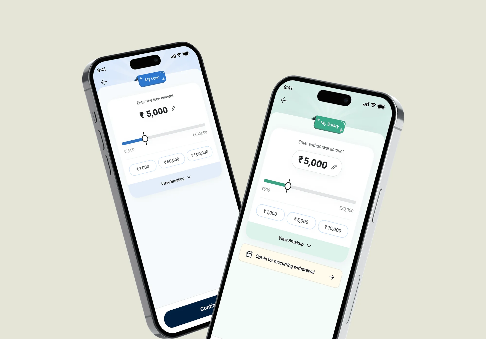
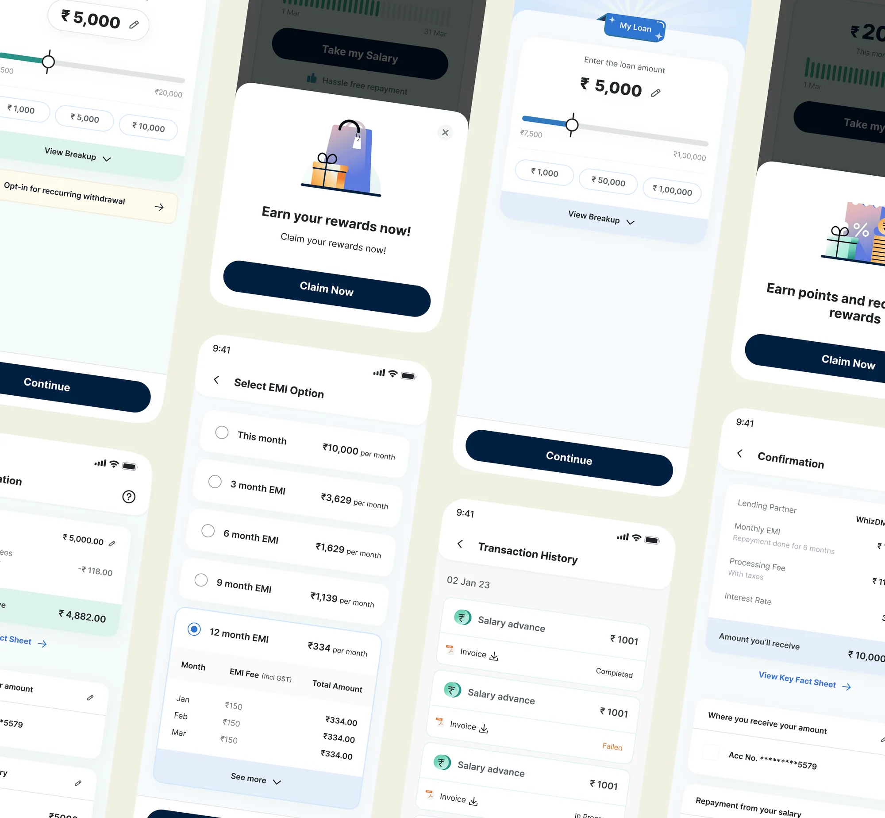
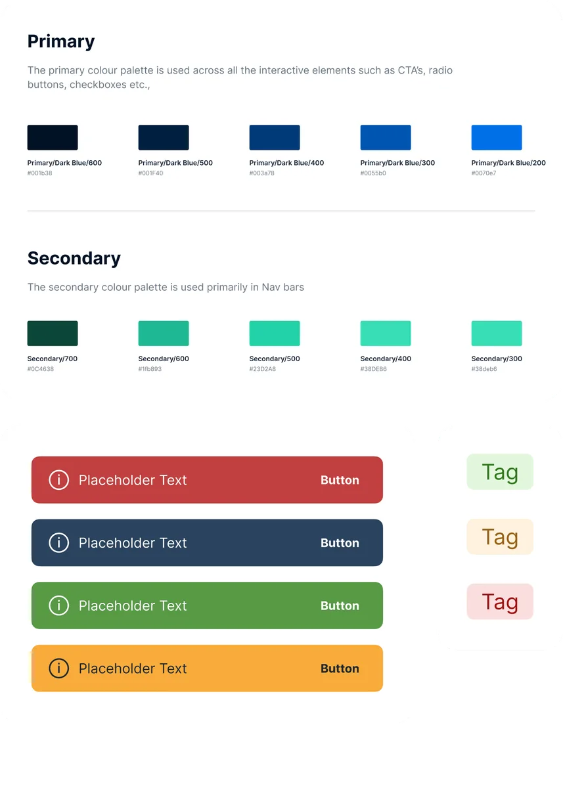
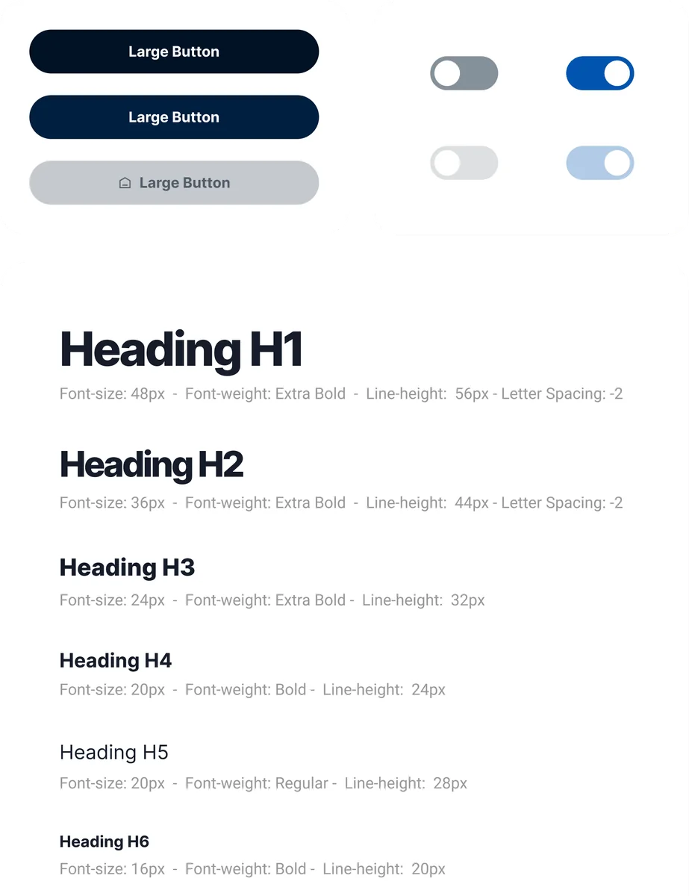
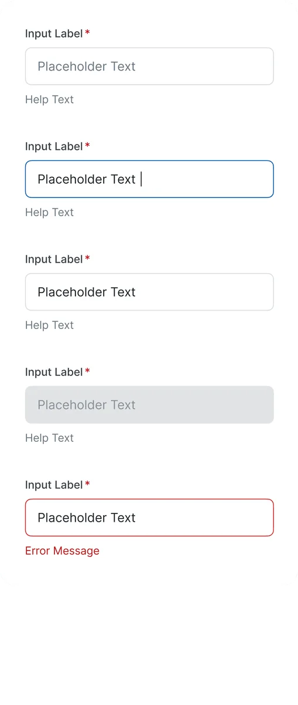
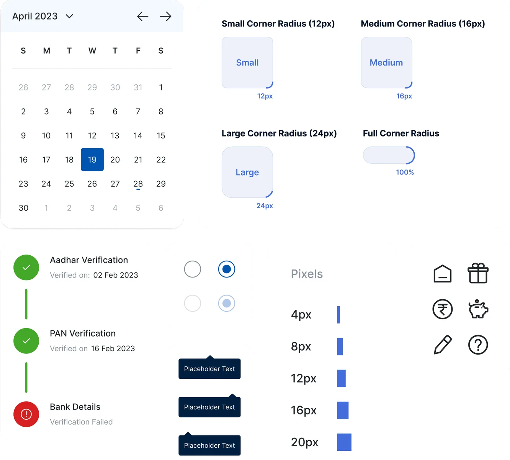
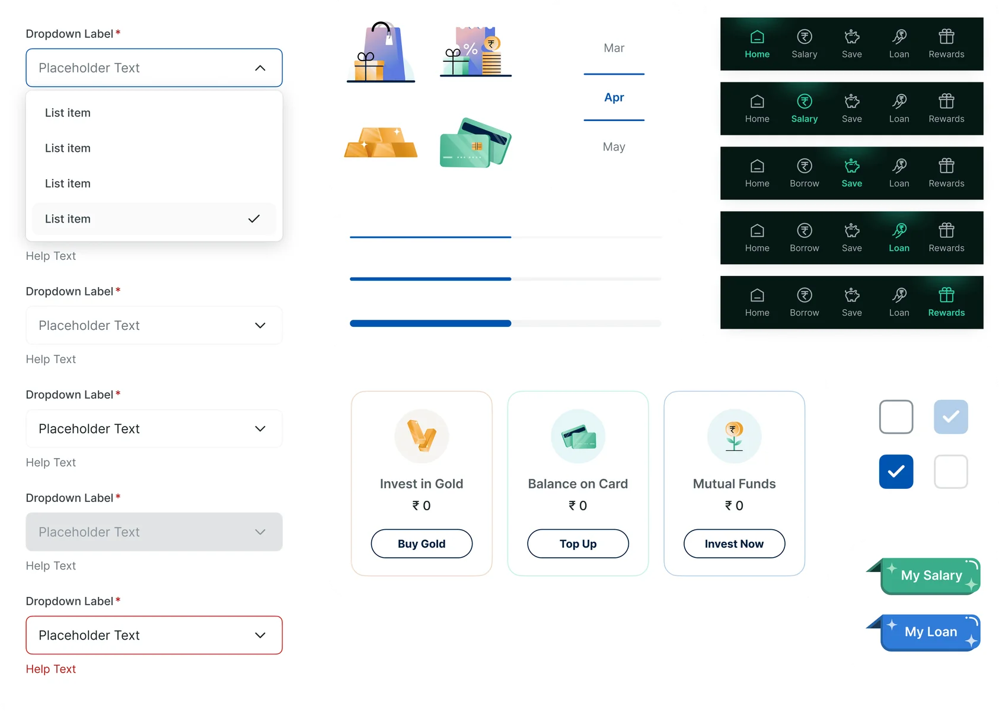

Making a financial wellness app easier to understand
- My role
- UI design, branding, design system
- Team
- 1 UX designer, 1 UI designer
- Tools
- Figma, After Effects
- Platform
- Mobile app
Jify gives employees on-demand access to their salary, along with other money tools, through the companies they work for. I redesigned its homepage and inner screens, and put together a mini design system to hold it all together.
Shipped and live Jify website Google Play
Two products that looked too much alike
The goal
Jify offers two things side by side: earned wage access, where people take out salary they've already earned, and an additional credit line. The goal was to make the app easier to understand and use, especially when it came to telling those two apart.
My part
I redesigned the homepage and inner screens, used branding to separate earned wage access from credit, and built a mini design system to keep every page consistent.
A homepage that makes it clear what's what
The new homepage clearly separates earned wage access from the credit line. It also brings in notifications and a few curated sections, so the useful things are easy to find.

Green for salary, blue for loans
Earned wage access sits on green and the credit line on blue, with clear tags like “My Salary” and “My Loan”, so people always know which one they're looking at.


A small system to keep it all consistent
I put together a set of reusable components, from colours and type to buttons, inputs and icons, so the screens stay consistent and future products can build on the same pieces.




